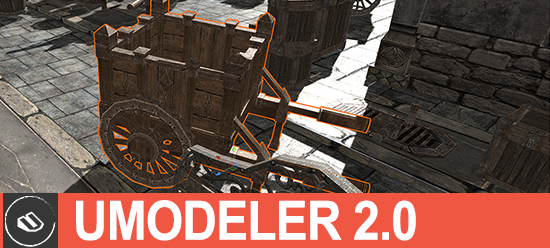
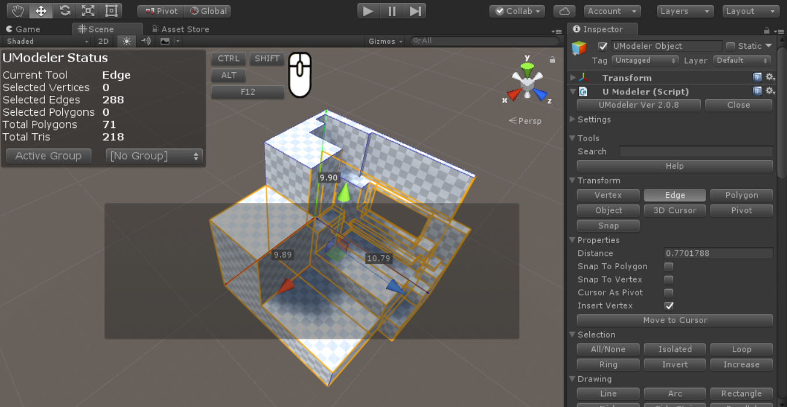

UModeler 2018¶

Version 2.3¶
- Enhancement : Makes it possible to spawn a new primitive shape at a 3d cursor position by clicking on the one-click button
- Enhancement : 3D cursor - Enables to position 3D cursor everywhere by SHIFT+CTRL+LMB - in the air, on any position of a polygon and at a vertex
- Enhancement : Enableing Edge Loop to be selected by LMB double click.
- Enhancement : Added All UModeler object selection to the All/None Select tool.
- Enhancement : Automatic syncs between
Generate Lightmap UVsparam in the Local Settings Tool andLightmap Staticvariable in MeshRenderer - BugFix : Serialization errors - null reference exception
- BugFix : Applied rich text to the icons’ tooltips in the toolbar and menu window.
- BugFix : Wrong rectangle selection of vertex/edge/polygon, and display of overlay numbers in the scaled scene view.
- BugFix : Not displaying all tools in the shortcut setting in Preference.
- BugFix : Made a clone outline clearer by giving more offset in the clone normal direction.
Version 2.2.3.2¶
- BugFix : Fixed missing textures after UModelerizing.
Version 2.2.3.1¶
- BugFix : Fixed leaving Vertex/polygon selection blue boxes even after deleting the UModeler object.
- BugFix : Fixed not displaying “Confirm” and “Cancel” button after doing an action for creating primitive shapes due to not repainting the area of the properties.
Version 2.2.3¶
- Feature : Added the One-Click Build feature to Rectange, Disk, Box, Room, Stair, Cylinder, Cone, Spiral Stair, Sphere and Capsule tools.
- Enhancement : Allowed the 3D cursor to move to the center of a polygon under the mouse cursor by CTRL+SHIFT+RMB.
- Enhancement : Added “Confirm” and “Cancel” buttons as necessary in the Properties.
- BugFix : Enabled z-test of the transparent selection polygon displayed on the selected polygons, and resolved z-fighting issue.
- BugFix : Reverting the changes done just before pressing Play button.
Version 2.2.2¶
- Feature : Added Spiral Stair Tool
- BugFix : Line Tool - Disappearance of a part of a line drawn across a polygon more than twice
- BugFix : The mesh out of UModeler disappeared while the camera is near it due to a incorrect bound box.
- Enhancement : Enabled the text based menu to be displayed on the separate menu window like Icon based Menu.
- Enhancement : Reduced the flickering of outlines of UModeler mesh.
Version 2.2.1¶
- BugFix : Vertex/Edge/Polygon Tools - Adding multiple selections by dragging LMB holding CTRL
- BugFix : Line Tool - Cutting a polygon by a new edge between another existing two edges.
- BugFix : Line Tool - Wrong shape of polygon when connecting the last point to the first point.
- BugFix : UModelerize - Fixed UModelerization failure.
- BugFix : Remove Doubles - Immediate update of blue vertex boxes for selection.
- BugFix : UI of the inspector - Fixed blocking key inputs in a parameter editor box.
- Change : Adding the popup menu for selecting menu mode in both the UV Editor and the inspector window.
Version 2.2.0¶
General¶
- Change : Replaced
ToolsandSettingsfoldout arrows with Toolbar UI in the inspector.- Change : Changed
Transformgroup name intoElements.- Change : Moved
Pivot ToolfromTransform grouptoTweak group.- Change : Disabled the Local Ruler display of the selected elements.
- Change :
Snap Toolhas been renamed toSnap Move Tooland moved fromTransform groouptoTweak group.- Change :
3D Cursor Toolhas been removed. Instead 3D cursor can be enabled via Settings and it can be positioned anytime.- Change : Removed
Cursor As Pivotproperty inVertex/Edge/Polygon Tools. Instead just enabling3D CursorinSettingsdoes it.- Change :
Helpbutton has been replaced with?button in the inspector.- Change : Renamed
Invert Face ToolintoFlip Tool.- Change : Renamed
Flip ToolintoAxis Flip Tool.- Change : Moved UModeler status box displayed on Scene view to the inspector.
- Change : Disabled
Input Viewerwhich will be replaed withCommentary Box- Change : Moved
Open UVEditorbutton fromSurface GroupintoUV Toolproperty.- Change : Removed Polygon group button and list in UModeler status. They are only availabe within
Polygon Group Tool.- Enhancement : Improved a way of positioning 3D Cursor by
Ctrl+Shift+LMBon a vertex.- Enhancement : Auto snapping
3D Cursorto the cloeset UV vertex.- Enhancement :
Align Tool- Replacing Axis/Location combo boxes with Toolbar buttons.- Enhancement :
Boolean Tool- Revealed each boolean operation as tools in the inspector.- Enhancement :
Pivot Tool- Enhanced a way of setting a pivot. 3D Cursor position will be the pivot as soon as selectingPivot Tool.- BugFix :
Clone Tool- Fixed invisible polygon outlines along a line while dragging LMB.- BugFix :
Eraser Tool- Fixed incorrect edge removal on a quad of a cube which is converted from a Unity primitive cube.- BugFix : Fixed wrong directions and positions of gizmos after rotating or scaling an object.
- BugFix : Fixed wrong positions of vertex/polygon boxes used for selecting vertex/polygon.
- BugFix : Fixed a shared mesh after duplicating a UModeler object.
- BugFix : Fixed replacing Unity primitive shape mesh with UModeler mesh after UModelerizing.
- BugFix :
Multi PushPull Tool- Fixed former polygons disappearance when one step pushpull is done just after pushpull by dragging an arrow- BugFix : Fixed Duplicated Cancel action triggered by pressing
ESCwhile selecting Vertex/Edge/Polygon.
UV Editor¶
- Feature : Added
Packing Tool. (See this)- Feature : Added
Fit Tool. (See this)- Feature : Renamed
Collapse TooltoWeld Tooland divided it intoWeld to First,Weld to AveandWeld to Last. (See this)- Enhancement : Auto snapping
Cross Cursorto the cloeset UV vertex.- Enhancement : Improved the whole performance.
- Change :
Make Island Toolhas been renamed toDetachTool.- Change :
Sew GroupandBreak Merge Grouphas been merged and the merged group has been namedWeld and Break.
New UI System¶
New Menu System - Switchable between Text based and Icon based by clicking
Ttoggle in the inspector.
- Feature : New Menu System (Icon and Context based). This can be enabled by toggling
Toff in the inspector.- Feature :
Commentary Box- Can be enabled/disabled viaSettings.- Feature : Added
Ttoggle to the top of the inspector to switch the menu between Text-based and Icon-based- Feature : Added
Ftoggle next toTtoggle to make the menu dockable and floatable.- Feature : Placed Vertex/Edge/Polygon Tools icons on the top-center of the scene view.
- Feature : Placed Settings icon and 3D Cursor icon next to Vertex/Edge/Polygon tool icons on the scene view. They can be toggled on and off.
- Change : Added
UModeler Windowto the top menu.
{kind=link}
Version 2.1.1¶
- Feature : Edge/Polygon Tranform - Added Extrusion fuctions holding
SHIFT.- Enhancement : Vertex/Edge/Polygon Selection - Added
Select only visibleproperty to selects non occluded elements from a camera. (See this)- Enhancement : Multi PushPull - Changed a helper line to an arrow.
- Enhancement : Multi PushPull - Added One step push/pull. (See this)
- Enhancement : Multi PushPull - Added Vertex Normal type extrusion. (See this)
- Change : Multip PushPull -
Individualin PushPull type has been renamed toIndividual Polygon- Change : Removed
Game Objecttool and RenamedCollider ObjecttoNew UModeclerin Misc group.- Feature : UVTool - Added
Exporttool to export uv outlines to .png file. (See this)
Version 2.1.0¶
- Feature : Export/import button in the Preference window to export/import shortcuts and general settings as a xml format.
- Enhancement : Collider tool - Added Assign Mesh button to assign the current mesh to the mesh collider.
- BugFix : Ballooned gizmos when scale in transform component has been changed.
- BugFix : Not coming back to the previous mesh immediately after canceling action by pressing ESC
Version 2.0.9¶
- Feature : Added “Triangulate” in the menu
- Enhancement : Inset tool - Enabling an inset from a hole.
- Enhancement : UModelerizing probuilder mesh. After converting, probuilder specific components are removed.
- BugFix : Keeping Polygon mode after using Combine tool or Flatten tool.
- BugFix : Spammed warning messages displayed while typing numbers in the inspector after transfoming/extruding.
Version 2.0.8¶

- Feature : Added a new tool - Polygon Group Tool.
- Fix : Some incorrect colors on Pro skin.
Version 2.0.7¶
- Feature : Advanced menu tooltips.
- Feature : Added
Helpbutton at the top of tools in the Inspector to show Online Manual- Feature : Added Color settings in Preferences. (See this)
- Enhancement : Shortcut Settings in Preferences - Modifiers’ list box has been replaced with 3 toggle boxes (
Shfit,CtrlandAlt) (See this)- Documentation : 3D Cursor Tool.
- Documentation : Pivot Tool
- Documentation : Snap Tool
- Fix : Material Tool - Added codes to deal with null material.
- Fix : Error of invalid selected polygon display.
Version 2.0.6¶
- Feature : New snapping - Snap to X-axis or Y-axis of the current placed points. This makes drawing a rectangle and a right angle triangle etc possible using
Line Tool(See this)- Feature : Seamless Editing - UModeler objects in a scene can be edited seamlessly. (See this)
- Enhancement : Edge display - Disabled showing invisible parts’ edges.
- Fix : Added recalculating tangents (See this)
- Fix : Z-fighting of the polygon selection mesh.
Version 2.0.51¶
- Hotfix : Adding/Removing material in Material tool wreren’t allowed.
- Hotfix : Individual edge transform holding
SHIFT.- Hotfix : Incorrect triangle count. The former displayed triangle number was twice more than the real one.
Version 2.0.5¶
- UV Editor : PBR texture preview
- UV Editor : Keeps width/height ratio of the polygon after unwrapping.
- UV Editor : Keeps the orientation of the polygons after unwrapping.
- Supports the Surforge preview texture wrapped in UModeler.
- UV Editor : 1D snapping done by transforming elements holding
CTRL- Transform tool : 1D snapping done by transforming elements holding
CTRL- Transform tool : Exposure of
Insert Vertexproperty.Transform Tool: Vertex splits when transforming a vertex holdingSHIFT.Material Tool: Improvement of displaying material preview in the list. The material with no texture is also displayed well.Bevel Tool: Made the selected vertices/edges/polygons visible at the beginning of Beveling.Vertex Color Toolhas been added.- The Color tool has been renamed to
Polygon Color Tool.- Grid Setup :
0.0315,0.0625grid size have been added to Popular Grid Size
Version 2.0.0¶
- UV Editor has been added. See UV Editor
Propertiesin the inspector is displayed under the group of the selected tool.- Added the clone of the selected polygons.
FreezeXForm Tool- Renamed toBake Transformand divided it into Scale and Rotation.- Added generating Lightmap UVs in
Local Settings ToolunderMiscgroup in the inspector.Arrange UV Islandsmenu item has been added in UModeler tool menu.- Made a new UModeler game object created under the parent object when clicking on “Game Object” or “Collider Object” button.
Grid Sizefield has been added toSettings/Snapto make it possible to specify any grid size.Mirror Tool- Now you can move the mirror plane byLMB Dragover the arrow of the mirror plane.Flip Toolhas been added inTweakgroup.Align Toolhas been added inTweakgroup.UV Tool- Added moving UVs by pressing Up or Down arrow keys holding CTRL.Combine Tool- PressingSPACEwill combine the selected vertices inCombine Tool.Vertex/Edge/Polygon Tool- 1D Snapping has been added. It works by moving a cursor to another vertex holdingCTRLwhile dragging the translation gizmo.Vertex/Edge/Polygon Tool-Insert Vertexproperty has been added.- Change -
PushPull Tool: RenamedDraw Edgesproperty toContinuous.- Change -
Multiple PushPullbutton has been added.- Change -
Cut Tool: Made Cutting direction flipped by pressingSPACEwhileLMBDragging- Change -
Backface Tool: Renamed toLocal Settings- Change -
Copy Tool: Renamed toDuplicate Tool- Change -
Game ObjectandCollider Objectbuttons have been moved toMiscgroup.- Bugfix - Not displaying triangulation result has been fixed.
- Bugfix - Spotty lightmap bug has been fixed.